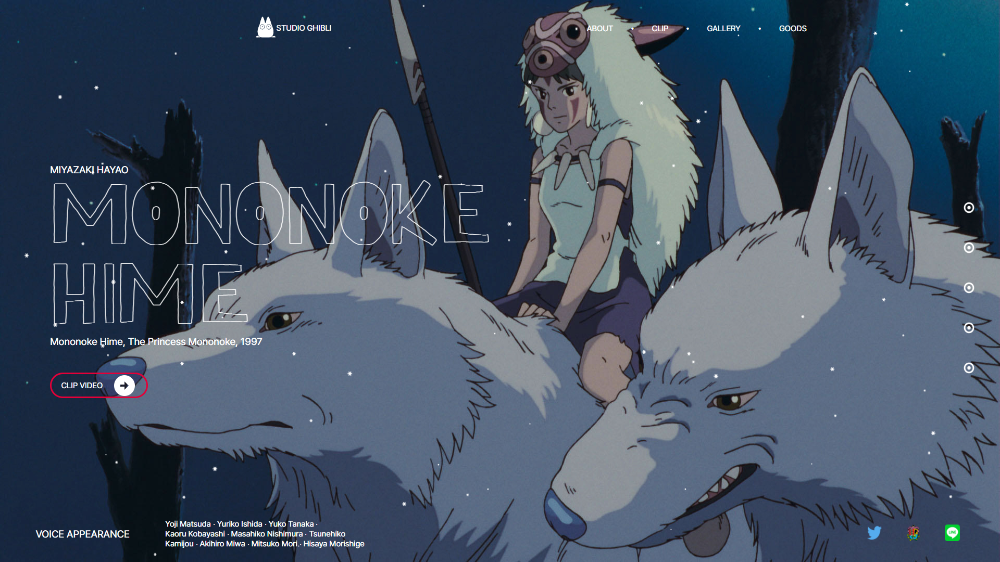
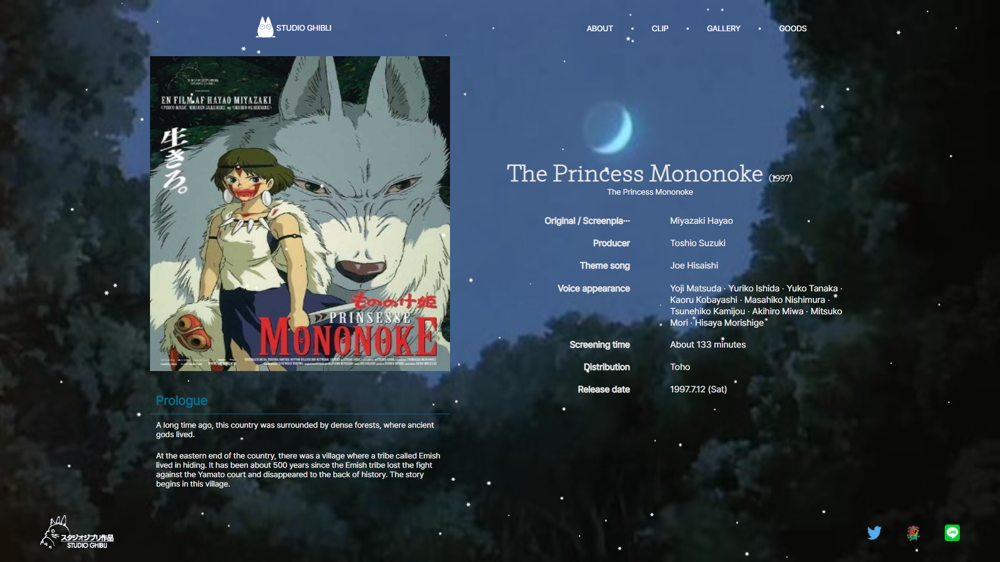
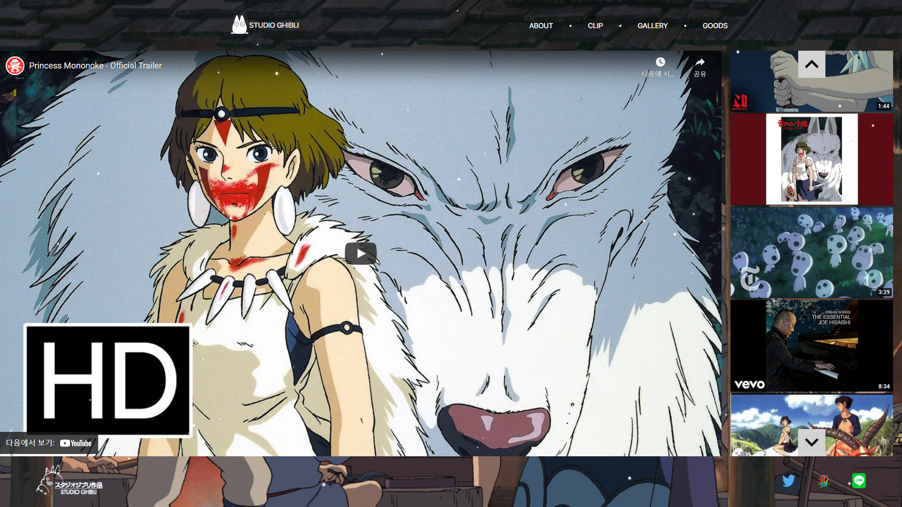
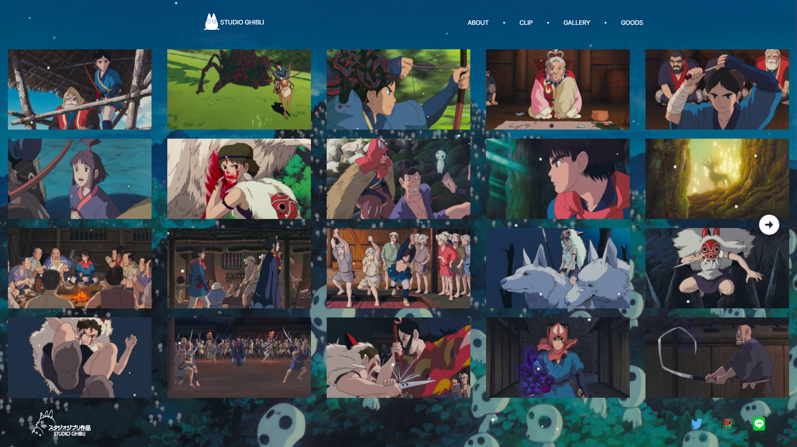

Mononoke Hime Website
"2021.12.13. ~ 2021.12.20."
스튜디오 지브리사의 영화 모노노케 히메 홈페이지를 제작하였습니다. 영화의 분위기를 생각해
흰색과 파란색을 주로 사용하였고, 플러그인을 사용하여 눈이 내리는 효과를 연출하였습니다.
메인 페이지와 3개의 서브 페이지로 구성되어 있으며, 모바일 사용자에 맞게 반응형 홈페이지로 제작되었습니다.
상단 메뉴 중 ABOUT / CLIP / GALLERY 를 클릭하면 각 해당 서브 페이지로 이동합니다.



